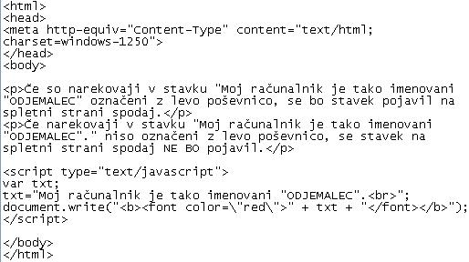
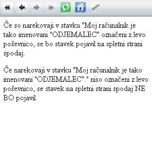

Modrecu je vrlina nagrada edina. (Konfucij)
Slika 1 in 2: Uporaba posebnih znakov - koda in videz spletne strani  Slika 3 in 4: Uporaba posebnih znakov - koda in videz spletne strani 1. Izdelaj spletno stran, ki bo izgledala tako, kot kažeta sliki 1 in 2. Datoteko poimenuj "29apriimek.html". Ne pozabi na konènico ".html". 2. Izdelaj spletno stran, ki bo izgledala tako, kot kažeta sliki 3 in 4. Datoteko poimenuj "29bpriimek.html". Ne pozabi na konènico ".html". POZOR: Najprej NATANÈNO izdelaj vajo v tej uèni enoti in jo pokaži profesorju, nato zapiši odgovore na spodnja vprašanja. 2. V kodo primera v tej uèni enoti vstavi spodaj navedene komentarje na ustrezna mesta, ki jih ti komentarji pojasnjujejo. //Prirejanj vrednosti spremenljivki tipa niz. //Ukaz za izpis besedila v JavaScriptu. //Napoved spremenljivke tipa niz. //Znaèka za konec kode v JavaScriptu. //Znaèka za zaèetek kode v JavaScriptu. 3. Kodo primera v tej uèni enoti spremeni tako, da bo barva napisa, ki je v rdeèi barvi: "Moj raèunalnik je tako imenovani "ODJEMALEC"", spremenila v zeleno.4. Kodo primera v tej uèni enoti spremeni tako, da bo barva napisa, ki je v rdeèi barvi: "Moj raèunalnik je tako imenovani "ODJEMALEC"", spremenila v modro. 5. Kodo primera v tej uèni enoti spremeni tako, da bo barva napisa, ki je v rdeèi barvi: "Moj raèunalnik je tako imenovani "ODJEMALEC"", spremenila v rumeno. 1. Vprašanja za usmerjanje pozornosti in usvajanje novih besed: 1. Kateri znak moramo uporabiti v JavaScriptu, èe želimo v besedilu uporabiti tudi posebne znake? 2. Kaj je niz znakov ali kratko niz v JavaScriptu? 3. Kako oznaèimo v JavaScriptu prehod v novo vrstico? 4. Kako oznaèimo v JavaScriptu znak za veznik "in"? 5. Kako oznaèimo v JavaScriptu tabulator? 6. Kako oznaèimo v JavaScriptu vraèalko? 2. Zapiši od ene do pet kljuènih besed, ki povzemajo vsebino te uène enote. 3. Vprašanja za razmislek in povezovanje z lastno izkušnjo: 1. Katera od slik v tej uèni enoti kaže spletno stran, na kateri smo pravilno oznaèili posebne znake? 2. Katera od slik v tej uèni enoti kaže spletno stran, na kateri nismo pravilno oznaèili posebne znake? 3. Kateri posebni znak smo uporabili v primeru te uène enote? 4. V èem se razlikuje videz spletne strani na sliki 1 od videza spletne strani na sliki 3? 5. V èem se razlikuje koda na sliki 1 od kode na sliki 3? 6. Kakšna je posledica nepravilnega oznaèevanja posebnih znakov v primeru te uène enote? 4. Domaèa naloga: 1. V zvezek prepiši misel, ki je zapisana na zaèetku uène enote z rdeèimi èrkami. Zabeleži nekaj lastnih misli, ki se ti utrnejo ob razmišljanju o njej. 2. Odgovori na vprašanja, na katere nisi uspel/a odgovoriti v šoli. 5. DODATNO DELO: 1. Izdelaj spletno stran, ki bo izgledala tako, kot kažeta sliki 3 in 4. Datoteko poimenuj "29cpriimek.html". Ne pozabi na konènico ".html". |